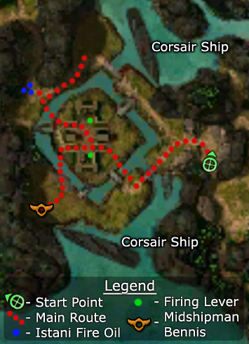

Elite: None / not listed

Click to enlarge · Local cache · Wiki
Save the village by defeating the corsairs and sinking their ships.
Region: Istan · Mission: 1 of 20 · Type: Cooperative
Required hero: Koss
Save Chahbek Village.
Eliminate all of the corsairs attacking the village, including those on the boats on the right and left sides of the map. You are aided in your efforts by the presence of a level 20 Kormir and a handful of Sunspear recruits.
After killing the corsairs near the village's entrance, you have a choice: follow Kormir's advice and sink the two vessels using Istani Fire Oil fired from the catapults or kill the ship-based corsairs using ranged attacks. If you choose the first method, make your way to the fire oil and carry it to one of the catapults: click once to load the weapon and click again to fire it. Each ship you sink will provide a morale boost. Kill the boss next and then clear out the remainder of the corsairs.
Keep as many of the Sunspear recruits alive as possible. If you confront one group at a time, there is almost no risk to losing any to the corsairs, especially if you sink the ships early.
In hard mode, there are only two risky spots: attacking the boss (who can manage to kill one of the recruits) and confronting the 3-4 mobs of corsairs in the upper right. However, you can easily succeed with any balanced group that can deal some damage and heal the recruits as well as party members. When engaging groups, take out the Corsair Healers first and any of their spellcasters next. Take advantage of the morale boosts you get for sinking the ships and go after the boss before tackling the overlapping groups.